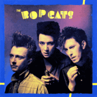

the Bopcats - The Bop Cats (Album, 1981)
01 - Rockin' A Dream (4:00)
02 - Kiss Goodbye (2:18)
03 - One Hand Loose (2:23)
04 - Crash Landing (3:13)
05 - Dial Red (3:51)
06 - Down The Line (2:08)
07 - Let's Go (4:41)
08 - Buddy This Is It (The Stand) (3:06)
09 - Don't Say Sorry (4:27)
10 - Rainbow Girl (2:18)
11 - Please Gimme Somethin' (4:10)
12 - Cool Off Baby (Live) (2:08)
13 - Train Kept A Rollin' (Live) (3:38)
© Attic :: [ATM-1113] © Unidisc 1981 / Unidisc Music Inc. 2013
Notes
Canada.
Sonny Baker - Vocals
Jack De Keyzer - Guitar
Teddy Fury - Drums
Cam Marshman - Bass
Duane Wayne - Guitar on tracks 01, 03, 04, 05, 07, 09
Conrad Keyes - Piano on track 06
the Ordinaires - Background vocals
the Chrysler Choir is heard on track 07
Engineer - Kim Holmgren
Producer - John Gibb
reference information: Discogs®
Review
109/366 (Project 366)
Fancy sound of (neo)Rockabilly. 1980s rockin' chic, Canadian style. Actually, tunes are pretty different.